Küchenarbeitsplatten für Stuttgart und Umgebung
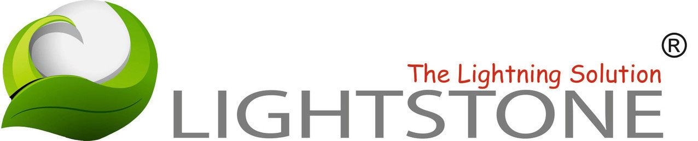
Lightstone ist ein qualitatives Quarzkompositmaterial, das zur Produktion von Küchenarbeitsplatten verwendet wird.
Die Grundlage für dieses hochwertig hergestellte Material sind sorgfältig ausgewählte Rohstoffe, wie zum Beispiel Quarz oder natürliche Farbpigmente. Küchenarbeitsplatten aus Lightstone erhalten Sie exklusiv bei uns in Altbach nahe Stuttgart in 12 mm Materialstärke.
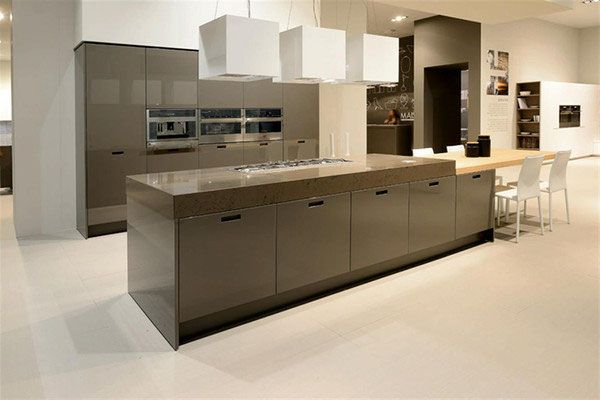
Was Sie über unsere Arbeitsplatten wissen sollten
In Altbach bei Stuttgart bieten wir Ihnen qualitätsvolle Küchenarbeitsplatten, die die aktuellsten Sicherheitsanforderungen erfüllen. Sehen Sie selbst!
Wie dicht und säurebeständig ist das Material?
Das porenlose und hochverdichtete Quarzkompositmaterial macht Lightstone höchst resistent gegen Flecken. So hält es auch Produkten des alltäglichen Gebrauchs wie Fett, Öl, Kaffee, Zitrussaft oder Essig stand.
Wie hygienisch sind die Küchenarbeitsplatten?
Lightstone ist ein sicheres hygienisches Produkt. Aufgrund des kompakten Materials und der wasserabweisenden Oberfläche sind die Küchenarbeitsplatten, die Sie bei uns in der Nähe von Stuttgart kaufen können, optimal für die ganze Familie geeignet.
Wie pflegeleicht sind die Arbeitsplatten?
Die Oberflächen sind von Haus aus sehr pflegeleicht und hygienisch. Dennoch benötigen sie immer mal wieder ein paar „Streicheleinheiten“. Zur täglichen Reinigung genügt das Abwischen mit einem normalen Tuch und einem geeigneten Reinigungsmittel. Bei stärkeren Verschmutzungen empfehlen wir einen nicht scheuernden Schwamm.
Welches System verfolgt Lightstone?
Durch die im Vergleich zu anderen Herstellern geringere Farbkollektion ist es nur bei Lightstone möglich, dem Kunden ein Quarzkompositmaterial im Einstiegssegment anzubieten. Die Qualität und die einzelnen Anteile der Komponenten, zum Beispiel der Quarzanteil, ist die gleiche wie bei anderen Anbietern.
Wie nachhaltig sind die Küchenarbeitsplatten?
Lightstone Arbeitsplatten sind sehr umweltfreundlich. Sie bestehen zu einem sehr hohen Anteil aus Quarz und durchlaufen einen nachhaltigen Produktionsprozess mit zertifizierter Qualität, um die natürlichen Ressourcen optimal zu schützen.
Lightstone in der Küche

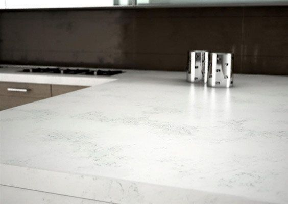

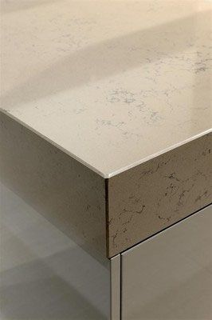

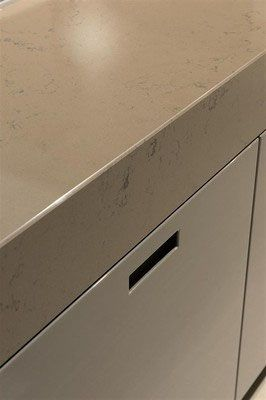

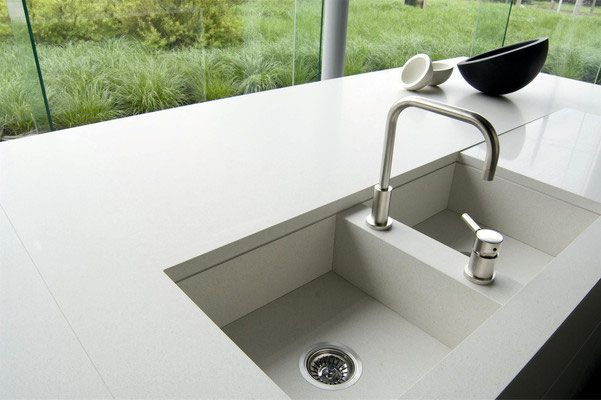

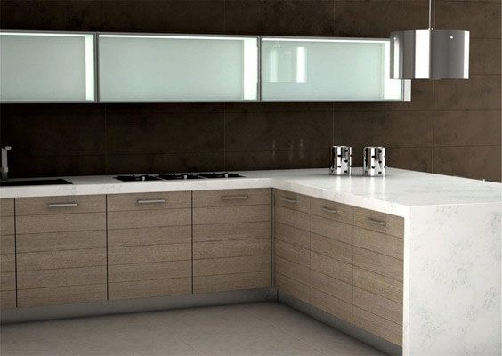

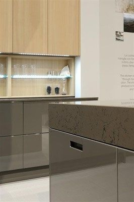

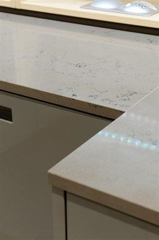

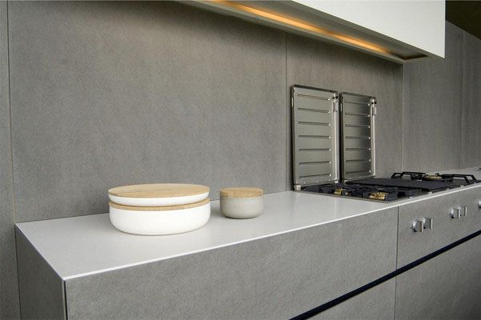

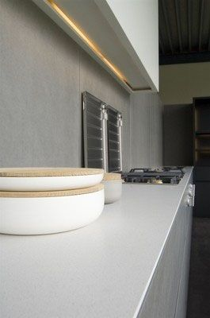
Farben und Oberflächen
Sie bekommen Lightstone Quarzsteinplatten in hochglänzenden oder gebürsteten Oberflächenveredelungen. Alle Materialien haben wir für Sie ständig am Lager. Sie können sich die Platten live vor Ort anschauen und reservieren lassen.
- Tafelgröße305 x 140 cm
- Plattenstärke12 mm
- Oberflächenpoliert und leathertouch
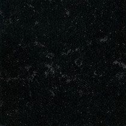
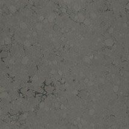
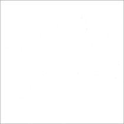
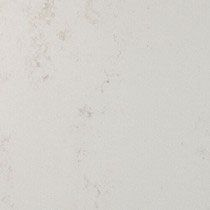
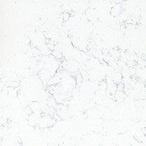
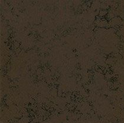
Zertifizierte Sicherheit
Lightstone Quarzarbeitsplatten erfüllen schon heute die modernsten und sicherheitsrelevantesten Anforderungen und haben dadurch folgende Zertifikate:
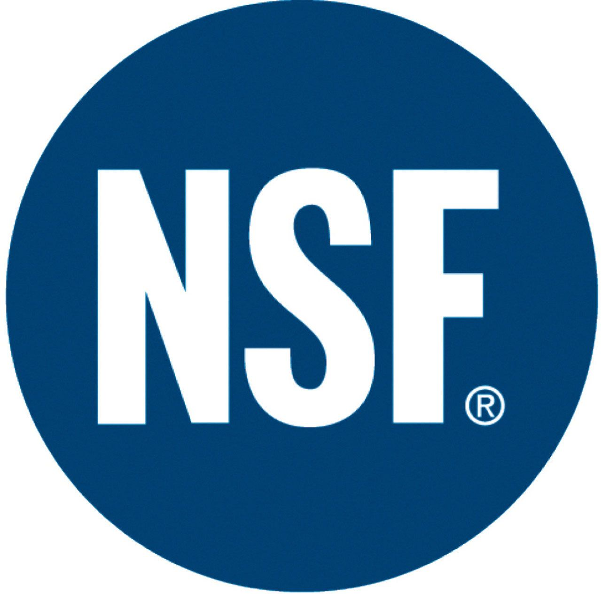
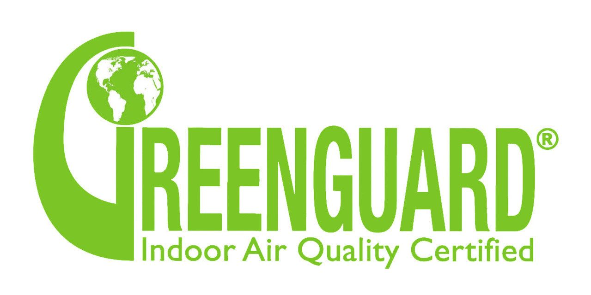
Lassen Sie sich beraten
Besuchen Sie unsere Ausstellung in Altbach oder rufen Sie uns an – wir beraten Sie gerne persönlich.